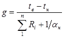
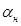
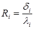
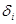
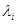
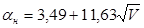
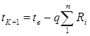

МИНИСТЕРСТВО
МОНТАЖНЫХ И СПЕЦИАЛЬНЫХ
СТРОИТЕЛЬНЫХ РАБОТ СССР
УТВЕРЖДАЮ
Заместитель министра
монтажных и специальных
строительных работ СССР
Солоденников Л.Д.
«12» ноября 1981 года
ИНСТРУКЦИЯ
ПО ПРОЕКТИРОВАНИЮ ФУТЕРОВОК
ПРОМЫШЛЕННЫХ ПЕЧЕЙ
ИЗ ОГНЕУПОРНЫХ ВОЛОКНИСТЫХ МАТЕРИАЛОВ
ВСН 429-81
ММСС СССР
Центральное бюро
научно-технической информации
Москва - 1982
СОДЕРЖАНИЕ
Настоящая инструкция разработана ВПИПИ Теплопроект Минмонтажспецстроя СССР на основании экспериментальных исследований, опыта проектирования, строительства и эксплуатации тепловых агрегатов с футеровками из волокнистых огнеупорных материалов.
При составлении инструкции использованы данные и проектные материалы ВНИПИ Теплопроект, Стальпроекта, Гипромеза, конструкторских бюро ПО «Ижорский завод» и «Горьковский автомобильный завод», опыт строительства тепловых агрегатов с новыми конструкциями футеровок, накопленный трестом Союзтеплострой, результаты эксплуатации головных образцов печей, а также паровых и водогрейных котлов на Челябинском металлургическом заводе, Магнитогорском металлургическом комбинате, Московском металлургическом заводе «Серп и Молот», ПО «Ижорский завод» и «Горьковский автомобильный завод», Гурьевском нефтеперерабатывающем заводе и других предприятиях.
Инструкция разработана лабораторией крупноблочных жаростойких конструкций ВНИПИ Теплопроект под руководством канд. техн. наук И.И.Шахова. Ответственный исполнитель Ю.Г.Каленский. В составлении инструкции принимали участие С.П.Батурин, А.Ф.Шестаков, В.Г.Кутуков, Л.С.Шерстова.
Инструкция согласована с Госстроем СССР.
Замечания по содержанию инструкции следует направлять по адресу: 143360, г.Апрелевка Московской обл., ВНИПИ Теплопроект.
|
Министерство монтажных и специальных строительных работ СССР (Минмонтажспецстрой СССР) |
Ведомственные строительные нормы |
ВСН 429-81 |
|
|
ММСС СССР |
|||
|
Инструкция по проектированию футеровок промышленных печей из огнеупорных волокнистых материалов |
|||
|
Вводится впервые |
|
1.1. Настоящая инструкция предназначена для проектирования конструкций футеровок промышленных печей с использованием в качестве рабочего и изоляционного слоев футеровок изделий на основе огнеупорных волокнистых материалов. Области применения огнеупорных волокнистых материалов приведены в приложении 1.
1.2. Изделия на основе огнеупорных волокнистых материалов следует применять после проведения технико-экономического анализа в тех случаях, когда достигается экономический эффект благодаря:
экономии топлива в период эксплуатации печей;
повышению производительности печей в результате сокращения цикла термообработки в печах периодического действия или увеличения рабочего пространства печи;
уменьшению трудозатрат при монтаже, а также сокращению сроков строительства и ремонта, в первую очередь, вследствие применения панельных конструкций футеровок максимальной заводской готовности.
1.3. Конструкции тепловых агрегатов с применением огнеупорных волокнистых материалов следует проектировать, как правило, сборными из крупноразмерных элементов и панелей с выполнением футеровки до монтажа печи. В отдельных случаях, в основном при производстве ремонтных работ, допускается применение конструкций, предусматривающих монтаж футеровки непосредственно в тепловом агрегате на готовом металлическом кожухе.
|
Внесены Всесоюзным научно-исследовательским и проектным институтом Теплопроект |
Утверждены Министерством монтажных и специальных строительных работ СССР 12 ноября 1981 г. |
Срок введения с 1 июля 1982 г. |
1.4. Газоплотность промышленных печей с футеровками из огнеупорных волокнистых материалов обеспечивают стальным листом панелей или кожухом печи. Конструкции стыков сборных панелей, оформление отверстий для термопар, гляделок и других технологических отверстий должны обеспечивать газоплотность печей (см. разделы 4, 5).
1.5. Металлоконструкции панелей тепловых агрегатов с футеровкой из огнеупорных волокнистых материалов следует проектировать в соответствии со СНиП II-В.3-72 «Стальные конструкции. Нормы проектирования».
1.6. Приваривать металлические элементы креплений к кожуху печи следует, как правило, сварочными пистолетами. Металлические анкеры и детали креплений из жаростойкой стали приваривают к металлическому основанию в соответствии с ОСТ 26-01-10-70.
1.7. Сушку футеровок, выполненных из изделий на основе огнеупорных волокнистых материалов, не производят. Скорость разогрева этих футеровок не лимитируют. Сушку и разогрев футеровки тепловых агрегатов, в которых наряду с футеровкой из огнеупорных волокнистых материалов применена футеровка из. штучных огнеупорных изделий или огнеупорных бетонов, производят согласно указаниям, регламентирующим скорости сушки и разогрева печей из этих материалов. Сушку промышленных печей с монолитными футеровками на основе огнеупорных волокнистых материалов (теплоизоляционные композиции) также не производят. Однако в процессе первого разогрева теплового агрегата следует устраивать площадки выдержки при температурах 150°C и 300°C не горячей поверхности футеровки (продолжительностью 4-8 каждая).
1.8. При применении футеровок и основе огнеупорных волокнистых материалов в тепловых агрегатах, работающих на сернистых мазутах, должны быть приняты специальные меры с целью защиты металлического кожуха и деталей креплений футеровки от коррозии.
2.1. Огнеупорные волокнистые материалы и изделия используют в качестве рабочего и теплоизоляционного слоев футеровок, не воспринимающих внешних нагрузок. Виды огнеупорных волокнистых материалов и их основные свойства приведены в табл. 1. Перечень огнеупорных волокнистых материалов, выпуск которых намечен на ближайшие годы, приведен в приложении 2.
2.2. Для изготовления металлоконструкций панелей футеровки следует применять сталь, соответствующую требованиям ГОСТ 19282-73 и ГОСТ 19903-74.
2.3. Для изготовления стальных анкеров и деталей креплений футеровок следует применять коррозионностойкие, жаростойкие и жаропрочные стали и сплавы, соответствующие требованиям ГОСТ 5632-72 и ГОСТ 20072-74.
Виды сталей для изготовления элементов креплений приведены в табл. 2. При выборе марки стали для анкеров следует учитывать возможность свариваемости и изготовления, а также условия эксплуатации.
2.4. Керамические анкеры следует выполнять из высокоглиноземистого сырья на глиняной или иной связке с содержанием не менее 45% Al2O3 (в соответствии с ГОСТ 4385-68). Предел прочности при растяжении материала керамического анкера в условиях нормальной температуры должен быть не ниже 2,94 МПа (30 кгс/см2).
2.5. Теплоизоляционные слои многослойных конструкций футеровок следует выполнять из огнеупорных волокнистых материалов и изделий, имеющих температуру применения не ниже максимальной температуры нагрева слоя и объемную массу, соответствующую минимальному расходу материала для обеспечения требуемого термического сопротивления при средней температуре нагрева слоя.
2.6. Составы теплоизоляционных композиций на основе огнеупорных волокнистых материалов и способы их укладки должны соответствовать инструкции ВСН 412-80 ММСС СССР.
2.7. При проведении теплотехнических расчетов удельную теплоемкость изделий на основе огнеупорных волокнистых материалов следует принимать равной 1047 Дж/(кг×К), или 0,25 ккал/(кг×°С).
Таблица 1
|
Наименование и марка огнеупорного волокнистого материала или изделия |
Максимальная температура применения, °C |
Объемная масса, кг/м3 |
Размеры, мм |
Теплопроизводность, Вт/(м×К) при ккал/(м.ч.°С) при средней температуре, °С |
Нормативный материал |
Завод-изготовитель |
||||||
|
рабочий слой |
изоляционный слой |
200 |
400 |
600 |
800 |
1000 |
1200 |
|||||
|
Муллитокремнеземистая вата, МКРВ |
- |
1150 |
100 |
- |
0,08 (0,07) |
0,12 (0,10) |
0,17 (0,15) |
0,29 (0,25) |
0,47 (0,40) |
(0,79) (0,68) |
Богдановинский огнеупорный завод (Сухолонское производство), Северский доломитный завод |
|
|
Муллитокремнеземистый рулонный материал, МКРР-130 |
- |
1150 |
130 |
(5000-10000)´(600-1400)´(20,30, 40) |
0,14 (0,13) |
0,17 (0,15) |
0,22 (0,19) |
0,31 (0,27) |
0,50 (0,43) |
0,79 (0,68) |
То же |
То же |
|
Муллитокремнеземистые плиты на органической связке, МКРП-340 |
600 |
1150 |
340 |
(600, 700)´(400, 500)´(50,40, 50, 60) |
0,15 (0,13) |
0,19 (0,16) |
0,23 (0,20) |
0,29 (0,25) |
0,40 (0,34) |
0,53 (0,46) |
То же |
Богдановичский огнеупорный завод, Северский доломитный завод Первоуральский динасовый завод |
|
Мулллтокремнеземистый войлок, МКРВ-200 |
850 |
1150 |
200 |
(5000-10000)´(600-1400)´(20,50, 40) |
0,09 (0,06) |
0,12 (0,10) |
0,14 (0,12) |
0,20 (0,17) |
0,33 (0,28) |
0,58 (0,50) |
То же |
Богдановичский огнеупорный завод (Сухолонское производство) |
|
Плиты на основе муллитокремнеземистой ваты и глиняной связки, ШВП-350 |
1200 |
1200 |
350 |
490´490´(100, 120) |
0,15 (0,13) |
0,17 (0,15) |
0,19 (0,16) |
0,23 (0,20) |
0,29 (0,25) |
0,43 (0,37) |
ТУ 36-2345-80 |
Апрелевский опытный завод теплоизоляционных изделий, ВНИПИ Теплопроект |
|
Теплоизоляционные композиции |
850 |
- |
400 |
- |
0,17 (0,15) |
0,20 (0,17) |
0,24 (0,21) |
0,30 (0,26) |
0,41 (0,35) |
- |
ВСН 412-80 ММСС СССР |
|
|
1000 |
- |
600 |
- |
0,21 (0,18) |
0,23 (0,20) |
0,29 (0,25) |
0,36 (0,31) |
0,44 (0,38) |
- |
То же |
- |
|
|
Шнуры теплоизоляционные из муллитокремнеземистой ваты |
- |
1150 |
200 |
Длина более 10000 мм, диаметр 30, 40, 50, 60, 70, 80, 90 |
0,07 (0,07) |
0,12 (0,12) |
0,19 (0,19) |
0,26 (0,26) |
0,44 (0,38) |
0,58 (0,50) |
ТУ 36-1695-79 |
Беличское НПО «Теплозвукоизоляция» |
|
Плиты теплоизоляционные из минеральной ваты на синтетическом связующем |
- |
500 |
100 |
1000´500´ (40, 50, 60) |
0,086 (0,074) |
0,109 (0,094) |
0,188 (0,160) |
- |
- |
- |
ГОСТ 9673-72 |
ПО «Мосасботермостекло», Вильнюсское ПО силикатных изделий |
|
125 |
0,038 (0,076) |
0,112 (0,096) |
0,192 (0,165) |
|||||||||
|
Плиты теплоизоляционные повышенной жесткости из минеральной ваты на синтетическом связующем |
- |
500 |
200 |
1000´500´ (40,50,60) |
0,105 (0,09) |
0,140 (0,120) |
0,174 (0,150) |
- |
- |
- |
ГОСТ 22950-78 |
Коммунарский завод строительных конструкций |
Таблица 2
|
Температура начала интенсивного окалино-образования, °С |
Теплотехнические свойства |
Максимальная температура применения, °С |
||
|
обработка резанием |
свариваемость |
|||
|
15Х5 |
650 |
++ |
+ |
600 |
|
15Х5М |
650 |
+ |
+ |
600 |
|
12Х13 |
700 |
+ |
+ |
650 |
|
12Х17; 08Х17Т |
900 |
+ |
+ |
800 |
|
15Х25Т |
1050 |
+ |
+ |
900 |
|
15Х28 |
1100-1150 |
+ |
+ |
100 |
|
12Х18Н9; 12Х18Н9Т |
850 |
+ |
++ |
800 |
|
20Х23Н13 |
1050 |
+ |
++ |
1000 |
|
08Х20Н14С2 |
1050 |
+ |
++ |
1000 |
|
20Х20Н14С2 |
1050 |
+ |
++ |
1000 |
|
20Х23Н18 |
1050 |
+ |
+ |
1000 |
|
20Х25Н20С2 |
1100 |
+ |
+ |
1050 |
|
Сплав Х20Н80 |
1150 |
+ |
+ |
1100 |
Обозначения: + удовлетворительная; ++ хорошая.
3.1. Теплотехнический расчет является основным для футеровок тепловых агрегатов из огнеупорных волокнистых материалов. По его результатам подбирают толщину отдельных слоев и всего ограждения.
Толщину футеровки следует назначать такой, чтобы затраты на ее возведение и эксплуатационные затраты были минимальными:
З + Э×Т = min,
где З - приведенные затраты на возведение футеровки, руб./м2;
Э - годовые эксплуатационные затраты - стоимость теряемого через футеровку тепла, руб./(м2×год);
Т - нормативный период окупаемости, принимаемый равным стойкости футеровки, но не более 6,6 лет.
3.2. Наибольшие температуры нагрева слоев футеровки и деталей креплений следует определять на основании теплотехнического расчета температур для установившегося теплового потока при заданной проектом температуре рабочего пространства.
Температуры в сечениях элементов футеровок следует рассчитывать как для многослойной плоской стенки. Удельный тепловой поток через футеровку следует определять по формуле:

где g - удельный тепловой поток, Вт/м2;
- температура внутренней (горячей) поверхности футеровки, К;
- температура наружного воздуха, К;
S Ri - термическое сопротивление теплопередаче многослойной стенки, (м2×К)/Вт;

К - количество слоев футеровки.
3.3. Термическое сопротивление слоя футеровки определяют по формуле:

где 

3.4. Значение коэффициента для тепловых агрегатов, расположенных в помещениях или на открытом воздухе, но защищенных от ветра, следует определять по формуле:
= 8,14 + 0,06×(tСТ - 273),
где tСТ - температура наружной поверхности ограждения, К.
Для тепловых агрегатов, расположенных на открытом воздухе и не защищенных от воздействия ветра, значение коэффициента следует определять по формуле:

где V - среднегодовая скорость ветра, м/с, определяется по СНиП II-А-6-72.
3.5. Температуру (K+I)-го слоя футеровки следует определять по формуле:

3.6. Вследствие наличия металлических и керамических анкеров тепловые потоки через футеровку следует увеличивать на 5%.
3.7. Сборные панели необходимо рассчитывать на нагрузку от собственной массы металлоконструкций и футеровки из волокнистых материалов в процессе изготовления, транспортирования и монтажа, принимая коэффициент динамичности равным 1.5. Жесткость металлоконструкций панели должна быть достаточной для того, чтобы обеспечить сохранность футеровки из волокнистых материалов.
3.8. Начальные конструкции печей, а также узлы сопряжения панелей должны быть проверены расчетом на усилия, возникающие при хлопке. Величину внутреннего давления при хлопке следует принимать равной 1,961 кПа (200 кгс/м2). При наличии взрывных клапанов этот расчет не производят.
4.1. Для изготовления футеровок из огнеупорных волокнистых материалов могут быть использованы изделия в виде формованных плит и войлока, а также теплоизоляционный композиции с наполнителем из огнеупорных волокнистых материалов. Не допускается применение изделий на основе огнеупорных волокнистых материалов в слое футеровки, который обращен в рабочее пространство печи и может подвергаться внешним механическим воздействиям.
4.2. Слой футеровки, обращенный в рабочее пространство, при скоростях движения газов внутри печного пространства менее 7 м/с и температуре до 850°С следует выполнять из войлока; при скоростях до 40 м/с - из формованных плит на глиняной связка (ШВП-350) или теплоизоляционных композиций о прочностью не менее 1 МПа (10 кгс/см2). При скоростях движения газов внутри печного пространства более 40 м/с или наличии истирающего воздействия футеровка из волокнистых огнеупорных материалов должна быть защищена от эрозии слоем огнеупорного кирпича или огнеупорного бетона.
4.3. В ограждающих конструкциях из огнеупорных волокнистых материалов футеровка выполняет только теплозащитные функции. Толщину слоя футеровки панелей устанавливают на основании теплотехнического расчета. Конструктивные решения футеровок тепловых агрегатов с применением огнеупорных волокнистых материалов приведены на рис. 1.
4.4. Конструкция и длина анкеров зависят от максимально допустимой температуры их нагрева, толщины футеровки, материала слоев и способов монтажа футеровки.
4.5. Элементы технологического оборудования, проходящие сквозь футеровку (штуцеры, патрубки и пр.), крепят к кожуху печи или металлоконструкции панелей. Во всех случаях должно быть предусмотрено обеспечение независимых деформаций футеровки и элементов технологического оборудования.
4.6. Конструкция футеровки в месте установки технологических термопар должна обеспечивать сохранность футеровки при их установке и замена и не ухудшать теплотехнических показателей футеровки. Узел футеровки в места установки термопары приведен на рис. 2.
4.7. Сопряжение футеровки из огнеупорных волокнистых материалов с шамотной кладкой следует выполнять таким образом, чтобы предохранить металлоконструкции панелей или кожух печи от перегревов. Узел сопряжения приведен на рис. 3.
Рис. 1. Конструкция футеровок тепловых агрегатов из огнеупорных волокнистых материалов о использованием в качестве рабочего слоя:
а - плит ШВП-350; б - войлока; 1 - плита ШВП-350; 2 - войлок; 3 - минераловатная плита; 4 - металлический анкер; 5 - лист (кожух); 6 - керамический анкер
Рис. 2. Конструкция узла футеровки из огнеупорных волокнистых материалов в месте установки термопары:
1 - плита ШВП-350; 2 - огнеупорный войлок; 3 - минераловатная плита, 4 - металлоконструкция панели; 5 - набивка муллитокремнеземистой ватой; 6 - термопара; 7 - крепежный болт; 8 - труба из жаростойкой стали; 9 - анкер
Рис. 3. Конструкция узла в месте установки горелки в футеровке термической печи из огнеупорных волокнистых материалов:
1 - газовая горелка (ГНП-3); 2 - горелочный камень; 3 - плита ШВП-350; 4 - огнеупорный войлок; 5 - металлоконструкция панели; 6 - минераловатная плита; 7 - анкер в нише; 8 - инжекционный смеситель; 9 - шамотная кладка
Футеровки с применением плитных изделий
4.8. В многослойных футеровках с рабочим слоем из плит ШВП-350 в качестве внутреннего, теплоизоляционного слоя, нагретого до температуры выше 600°С, следует применять муллитокремнеземистый войлок МКРВ-200. При монтаже футеровки и определении расхода материала необходимо учитывать коэффициент уплотнения войлока во внутреннем слое теплоизоляции, равный 1,5.
4.9. Для кропления футеровки стен к металлическому листу панелей или к кожуху печи при температурах до 1200°С следует применять керамические (рис. 4) или скрытые металлические (рис. 5) анкеры. Скрытые металлические и керамические анкеры устанавливают в горизонтальных швах между плитами (по два анкера на плиту с каждой стороны). Швы необходимо заполнять огнеупорным войлоком.
Рис. 4. Конструкция анкерного крепления при помощи керамических анкеров с держателями для футеровок из плитных волокнистых материалов:
а - схема анкерного крепления; б - элементы анкерного крепления; 1 - лист (кожух); 2 - держатель; 3 - плита ШВП-350; 4 - анкер; 5 - теплоизоляция
Рис. 5. Конструкция анкерного крепления при помощи металлических анкеров скрытого типа:
а - схема крепления; б - элементы крепления; 1 - лист (кожух); 2 - держатель; 3 - плита ШВП-350; 4 - анкер; 5 - теплоизоляция
4.10. В футеровках стен и сводов при температурах до 1000°С следует применять металлические анкеры в виде штырей (рис. 6). Крепление футеровки выполняют при помощи шайб и гаек, навинчиваемых на штыри, снабженные резьбой, либо при помощи шайб, привариваемых к штырям. На каждую плиту устанавливает по четыре таких штыря (на расстоянии 100 мм от каждой из сторон плиты). В этом случае плиты устанавливают вплотную друг к другу.
Рис. 6. Конструкция анкерного крепления футеровки из плитных материалов и огнеупорного войлока:
а - схема крепления; б - элементы анкерного крепления; 1 - лист (кожух); 2 - штырь с резьбой; 3 - шайба; 4 - гайка; 5 - плита или огнеупорный войлок; 6 - штырь без резьбы
4.11. При проектировании футеровок (раскладке плит и назначении мест приварки анкеров) следует исходить из минимальных размерных сторон плит. Для плит ШВП-350 этот размер равняется 480 мм.
4.12. В футеровках стен, высота которых превышает 4 м, а температура службы - 900°С (при применении скрытых анкеров), необходимо предусматривать устройство разгрузочного горизонтального пояса, воспринимающего нагрузку от массы вышележащих плит.
4.13. В электропечах сопротивления с расположением электронагревателей на стенах и сводах необходимо применять плиты ШВП-350 толщиной 120 мм. Для крепления плит футеровки и электронагревателей следует использовать керамические или металлические анкеры, не выступающие на наружную поверхность футеровки. Высота стен электропечей сопротивления с расположением электронагревателей на стенах не должна превышать 1,5 м.
4.14. В футеровках стен электропечей следует применять металлические анкеры скрытого типа или в виде штырей, располагаемых в углублениях плит (рис. 7, а). В футеровках сводов для крепления плит необходимо применять анкеры типа штырей, располагаемые в углублениях плит (рис. 7, б). По окончании монтажа футеровки углубления заделываются огнеупорной массой на основе огнеупорных волокнистых материалов. Состав огнеупорной массы и технология заполнения углублений в плитах приведены в приложении 3.
4.15. В качестве металлических держателей для крепления электронагревателей на стенах следует применять крики из нихрома (см. рис. 7). Крюки из нихрома заглубляют в плиты ШВП-350 на глубину 100 мм и располагают под углом 30°.
На сводах печей электронагреватели подвешивают за крюки из нихрома, которые крепят к плитам ШВП-350 (см. рис. 7, б). Схемы расстановки нагревателей на стонах электропечей сопротивления приведены на рис. 8.
4.16. В электропечах сопротивления следует применять нагреватели только из проволоки круглого сечения. Применение электронагревателей из полосы не допускается.
Рис. 7. Конструкции футеровок электропечей сопротивления из огнеупорных волокнистых материалов:
а - футеровка стен; б - футеровка сводов; 1 -основание панели; 2 - минераловатная плита; 3 - огнеупорный войлок; 4 - анкер скрытого типа; 5 - плита ШВП-350; 6 - крюк из нихрома; 7 - электронагреватель; 8 - штырь с шайбой и гайкой в нише плиты; 9 - подвеска из нихрома
Рис. 8. Схема расстановки электронагревателей на стенах электропечей сопротивления с футеровкой из огнеупорных волокнистых материалов:
1 - электронагреватели; 2 - плита ШВП-350; 3 - огнеупорный войлок; 4 - анкерное крепление
Футеровки с применением войлока
4.17. При монтаже футеровок с рабочим слоем из муллитокремнеземистого войлока МКРВ-200 и определении расхода войлока на футеровку необходимо учитывать коэффициент уплотнения войлока в рабочем слое футеровки, равный 1,2.
Рис. 9. Конструкция анкерного крепления с поворотной шайбой для футеровок с применением огнеупорного войлока в наружном слое:
а - схема крепления; б - элементы анкерного крепления; 1 - лист (кожух); 2 - штырь, 3 - поворотная шайба; 4 - огнеупорный войлок; 5- теплоизоляция
4.18. В футеровках стен следует применять металлические анкеры. Конструкции анкеров для крепления футеровки из огнеупорного войлока приведены на рис. 6, 9 и 10. При монтаже футеровок величину дополнительного уплотнения войлока шайбами в местах установки анкеров принимают равной 20 - 25 мм для толщин рабочего слоя до 50 мм) и 30 - 35 мм (для толщин рабочего слоя войлока от 50 до 100 мм).
Рис. 10. Конструкция анкерного крепления с многопозиционной поворотной шайбой для футеровок из плитных материалов и огнеупорного войлока:
а - схема крепления; б - элементы анкерного крепления; 1 - лист (кожух); 2 - штырь; 3 - поворотная шайба; 4 - огнеупорный войлок или плита; 5- теплоизоляция
Расстановку металлических анкеров и укладку слоев войлока производят согласно схемам, приведенным на рис. 11.
Рис. 11. Схемы расстановки анкеров для футеровок из огнеупорного войлока:
а - при укладке наружного слоя
войлока встык; б - то же, внахлестку; 1 - лист металлоконструкции панели стены
или кожух; 2 - лист металлоконструкции панелей свода или кожух;
3 - огнеупорный войлок; 4 - анкер; 5 - минераловатная плита
4.19. Швы по границам отдельных слоев рулонированного войлока не устраивают, а полосы рулона слоев укладывают с перевязкой швов.
4.20. В футеровках стен высотой менее 3 м при значительной протяженности теплового агрегата укладывают слои рулонированного войлока в горизонтальном направлении. При высоте стен 3 м и более слои рулонированного войлока укладывают в вертикальном направлении.
Рис. 12. Конструкция футеровки с горизонтальным расположением слоев огнеупорного войлока:
1 - лист (кожух); 2 - минераловатная плита; 3 - огнеупорный войлок, 4 - металлический анкер скрытого типа; 5- планка; 6 - штырь
4.21. При горизонтальном расположении слоев войлока следует использовать металлические анкеры скрытого типа. Конструкция футеровки с горизонтальным расположением слоев войлока приведена на рис. 12. Коэффициент уплотнения муллитокремнеземистого войлока в футеровках с горизонтальным расположением слоев войлока следует принимать разным 2.
Футеровки с монолитным слоем
4.22. Футеровки с монолитным наружным слоем, образуемым методом торкретирования или укладкой теплоизоляционных композиций на основе огнеупорных волокнистых материалов, следует применять:
при футеровке участков сложной конфигурации и в местах сопряжение с трубами газоходов и др.;
при ремонтах отдельных участков футеровки.
4.23. В зависимости от температуры эксплуатации футеровки выполняют однослойными или многослойными с теплоизоляционными слоями. Во всех случаях толщину слоя необходимо назначать не менее 80 - 100 мм.
4.24. Конструкции стальных анкеров для крепления футеровок с монолитным наружным слоем, образуемым методом торкретирования или укладкой теплоизоляционных композиции на основе огнеупорных волокнистых материалов, приведены на рис. 13 и 14.
4.25. Для равномерного распределения усадочных трещин по более нагретой поверхности панелей, наружный слой которых образуют методом торкретирования или выполняют монолитным из теплоизоляционных композиций на основе огнеупорных волокнистых материалов, следует предусматривать усадочные швы шириной 3 мм и глубиной, равной половине толщины наружного слоя. Расстояние между швами 750 мм.
Рис. 13. Конструкция анкерного крепления однословной монолитной футеровки:
а - схема крепления; б - элемент крепления; 1 - кожух; 2 - анкер; 3 - монолитная огнеупорная масса или торкрет-масса
Рис. 14. Конструкция анкерного крепления многослойной футеровки с монолитным наружным слоем:
а - схема крепления; б - элементы крепления; 1 - кожух (лист); 2 - теплоизоляция; 3 - шайба; 4 - анкер; 5 - монолитная огнеупорная масса для торкрет-масса
5.1. При проектировании панелей футеровок из огнеупорных волокнистых материалов и изделий, обладающих малой объемной массой, следует максимально укрупнять их размеры. перед монтажом на рабочей площадке следует производить укрупнительную сборку панелей в единый монтажный элемент.
5.2. При разработке конструкции печей из панелей конструктивные решения могут быть в виде:
каркасно-панельных конструкций (рис. 15, а);
панельных конструкций, образующих каркас печи (рис. 15, б).
Рис. 15. Принципы конструирования панельных конструкций печей:
а - с несущий каркасом и
навесными панелями; б - с панелями, образующими несущий каркас;
1 - каркас печи; 2 - навесная панель; 3 - панель, образующая каркас
5.3. каркасы в каркасно-панельных конструкциях воспринимают все статические и динамические нагрузки, в том числе и от собственной массы ограждающих панелей футеровки.
5.4. В панельных конструкциях печей все нагрузки воспринимают панели, образующие каркас печи. При проектировании панельных конструкций печей их общая устойчивость должна обеспечиваться соответствующим конструированием узлов и включением в работу дополнительных элементов печи (лестниц, площадок и т.п.).
5.5. Металлоконструкции сборных панелей должны иметь по периметру листа металлическую обвязку, обеспечивающую прочность и жесткость панелей при транспортировании и монтаже. Обвязку панелей необходимо использовать также в качестве элементов для стыковки панелей между собой или к элементам каркаса печи. Для этого в панелях следует предусматривать отверстия для их болтового крепления (рис. 16 а, б).
5.6. Монтажные петли панелей крепят или приваривают к металлической обвязке. Для удобства монтажа целесообразно петли выполнять съемными и располагать ближе к центру тяжести панели.
5.7. Очертания торцевых поверхностей панели должны обеспечивать простоту различных узлов сопряжении элементов футеровки и удобство выполнения швов. Примеры конструирования стыков приведены на рис. 16, в, 17 и 18.
5.8. При проектировании панелей футеровки из огнеупорных волокнистых материалов следует предусмотреть между ними уплотнительные прокладки и (при необходимости) устройство компенсаторов между элементами стыкуемых панелей для обеспечения газоплотности и свободы температурных деформаций кожуха футеровки.
5.9. Конструкции металлического несущего каркаса печей должны обеспечивать простоту и удобство монтажа и демонтажа крупноразмерных панелей.
Рис. 16. Конструктивные решения панелей промышленных печей с футеровкой из огнеупорных волокнистых материалов:
а - сварная панель; б - штампованная панель; в - узлы стыковки панелей; 1 - обвязка панели; 2 - лист; 3 - изоляционный слой; 4 - рабочий слой; 5 - анкера; 6 - металлоконструкция штампованной панели; 7 - прокладки из огнеупорного войлока; 8 - монтажный болт; 9 - соединительная и уплотняющая накладка; 10 - прокладка из асбокартона, смоченного в жидком стекле
Рис. 17. Конструкция узлов сопряжении футеровок стен и сводов печей из огнеупорных волокнистых материалов пои наличии готового кожуха печи:
1 - кожух печи; 2 - минераловатная плита; 3 - огнеупорный войлок; 4 - штырь; 5 - плита ШВП-350; 6 - анкер скрытого типа
Рис. 18. Конструкция узлов сопряжении футеровок стен и сводов печей из огнеупорных волокнистых материалов при монтаже печи из сборных элементов:
1 - металлоконструкция панели стены; 2 - металлоконструкция панели свода; 3 - минераловатная плита; 4 - огнеупорный войлок; 5 - плита ШВП-350; 6 - штырь
5.10. При конструировании панелей следует предусматривать мероприятия, обеспечивающие сохранность футерованных панелей в период транспортирования и защиту их от увлажнения. Пример объединения панелей в транспортный пакет приведен на рис. 19.
Рис. 19. Пример организации транспортирования панельных конструкций печей:
1 - металлоконструкция панели; 2 - монтажный элемент, устанавливаемый на период монтажа; 3 - монтажный болт; 4 - футеровка панели
|
Наименование теплового агрегата |
Элемент печи |
Элемент футеровки |
Материал |
|
1 |
2 |
3 |
4 |
|
Черная металлургия |
|||
|
Обжиговые машины |
Все газопроводы |
Изоляционные слои |
Плиты МКРП-340 |
|
Воздухонагреватели доменных печей |
Купол и стены |
То же |
То же |
|
Методические печи для нагрева металла перед прокаткой |
Стены и свод |
² |
Плиты ШВП-350 |
|
Газовые печи для термообработки металла: |
|||
|
одностопные колпаковые печи для отжига рулона |
То же |
Рабочий слой |
Огнеупорный войлок МКРВ-200 или плиты ШВП-350 |
|
трехстопные колпаковые печи для отжига рулона |
² |
То же |
То же |
|
прямоугольные колпаковые печи для проката |
² |
² |
² |
|
печи с выкатными подами |
² |
² |
Плиты ШВП-350 |
|
печи с внешней механизацией |
² |
То же |
То же |
|
проходные печи |
² |
² |
² |
|
Котлы-утилизаторы |
Высокотемпературные зоны |
Изоляционные слои |
Плиты МКРП-340 |
|
Машиностроение |
|||
|
Газовые печи для термообработки изделий: |
|||
|
печи с выкатными подами |
Стены и свод |
Рабочий слой |
Плиты ШВП-350 |
|
колпаковые печи |
То же |
То же |
Огнеупорный войлок МКРП-200 или плиты ШВП-350 |
|
печи с внешней механизацией |
² |
² |
То же |
|
проходные печи |
² |
² |
² |
|
ямные печи |
Стены и съемный свод |
² |
² |
|
Электропечи сопротивления для термообработки изделий: |
|||
|
печи (типа СДО) с выкатными полами с расположением электронагревателей на стенах и своде |
Стены и свод |
² |
Плиты ШВП-350 |
|
шахтные печи (типа СШО) с расположением нагревателей на стенах |
Стены и съемная крышка |
² |
То же |
|
Нагревательные печи |
Стены и свод |
Изоляционные слои |
Плиты ШВП-350 или огнеупорный войлок МКРВ-200 |
|
Нефтеперерабатывающая промышленность |
|||
|
Трубчатые подогреватели различного назначения |
Стены и свод радиантных камер |
Рабочий слой |
Огнеупорный войлок МКРВ-200 или плиты ШВП-350 |
|
Промышленность строительных материалов |
|||
|
Туннельные печи для обжига кирпича, керамических дренажных труб и др. |
Свод в зоне обжига |
То же |
Плиты ШВП-350 |
|
Конвейерные печи для обжига эмалированных изделий |
Стены и свод в зоне обжига |
² |
То же |
|
Энергетика |
|||
|
Паровые котлы средней производительности типа ДКВР |
Стены и свод |
Рабочий стол |
Плиты ШВП-350 или огнеупорный войлок МКРВ-200 |
|
Водогрейные котлы средней производительности |
То же |
² |
То же |
|
Наименование материала |
Температура применения, °С |
|
Муллитокремнеземистый хромсодержащий рулонный материал (МКРРХ-150 по ГОСТ 23619-79) |
1300 |
|
Муллитокремнеземистая бумага (МКРБ-500 по ГОСТ 23619-79) |
1150 |
|
Муллитокремнеземистый картон (МКРК-500 по ГОСТ 23619-79) |
1150 |
|
Муллитокремнеземистый хромсодержащий войлок (МКРВХ-250 по ГОСТ 23619-79) |
1300 |
|
Муллитокремнеземистый огнеупорный теплоизоляционный фетр по Ту 14-203-58-31 |
1150 |
1. Настоящая технология применяется при заполнении углублений в плитах ШВП-350, используемых в наружном (рабочем) слое футеровок печей, которые работают при температуре до 1000°С, с целью защиты металлических анкеров от возможного соприкосновения с электронагревателями (в электропечах) и частичной защиты их от коррозии.
2. Углубления в плитах ШВП-350 должны иметь размеры не более 100х100 мм и глубину не более 60 мм. Для обеспечения заанкеривания огнеупорной массы углублениям плит целесообразно придавать конусообразную, сужающуюся к наружной (нагреваемой) поверхности, форму.
3. Заполнять углубления в плитах ШВП-350 рекомендуется огнеупорной массой на основе муллитокремнеземистой ваты и глиняного шликера из огнеупорной глины и жидкого стекла.
4. Для приготовления глиняного шликера 3,5 кг сухой молотой огнеупорной глины марок Ч-I или Ч-II Часов-Ярского месторождения (ТУ 14-8-162-75) необходимо залить 10 литрами воды на 3-4 часа, периодически перемешивая массу.
5. Для приготовления смеси глиняного шликера и жидкого стекла следуем смешать 6л шликера с 5л жидкого стекла (по ГОСТ 1307-67) плотностью 1,45 г/см3.
6. Для приготовления огнеупорной смеси необходимо тщательно перемешать 1 кг распушенной муллитокремнеземистой ваты со смесью шликера и жидкого стекла. Для заполнения углубления следует взять необходимое количество огнеупорной массы и, слегка отжав воду до получения тестообразной консистенции, плотно набить массой углубление. Неровную поверхность в пределах углублений сверху необходимо затереть мастерком. Не следует допускать попадания массы на открытую поверхность плит.